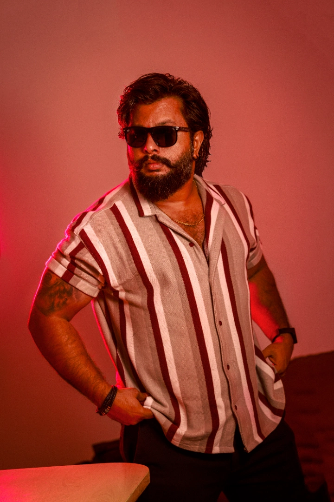
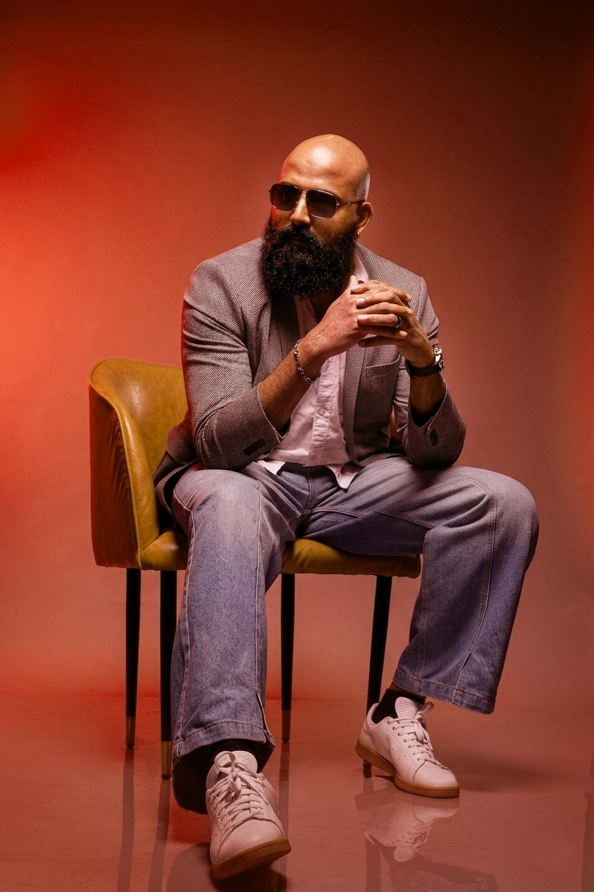
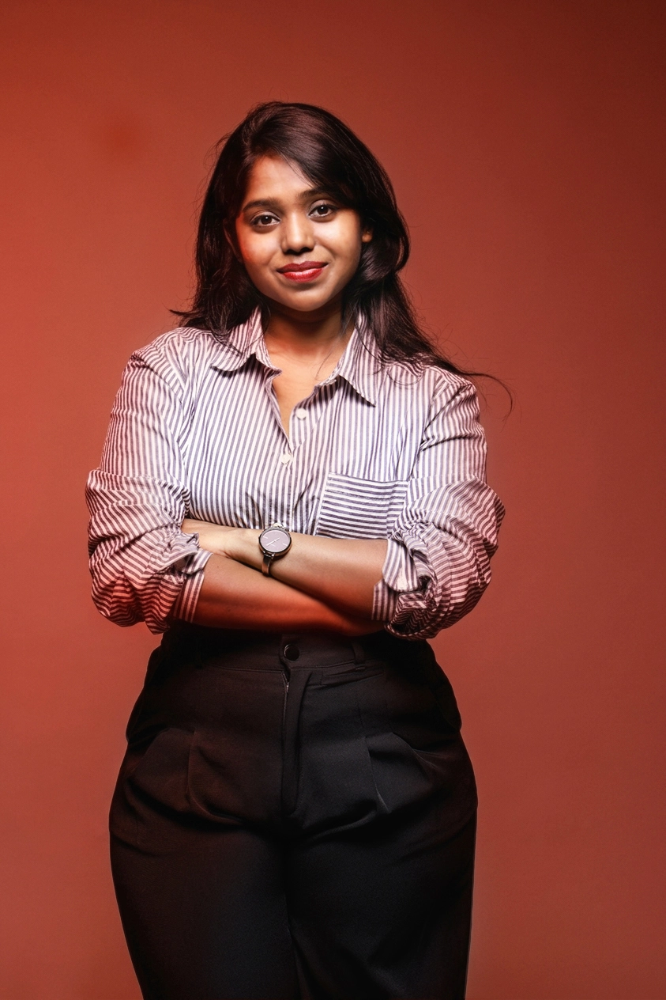
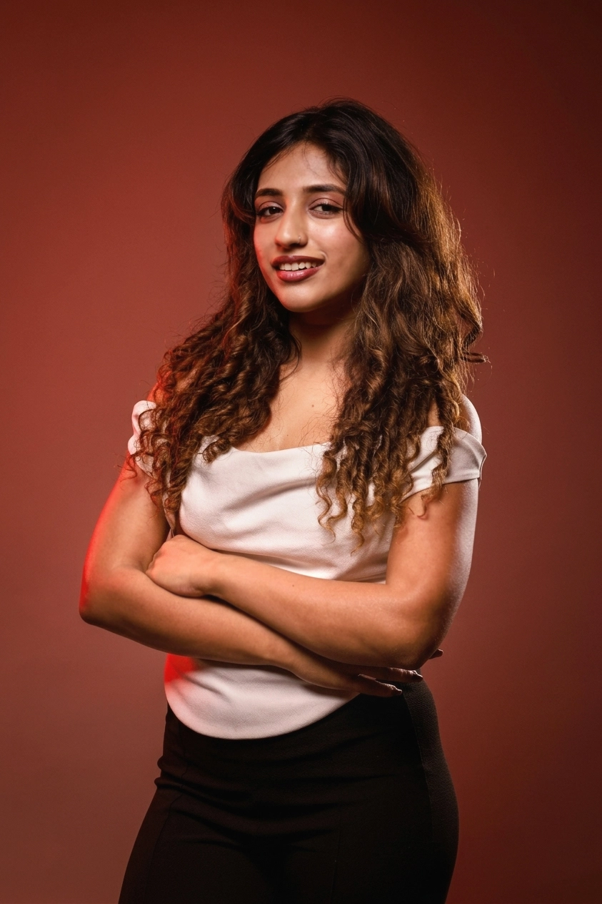
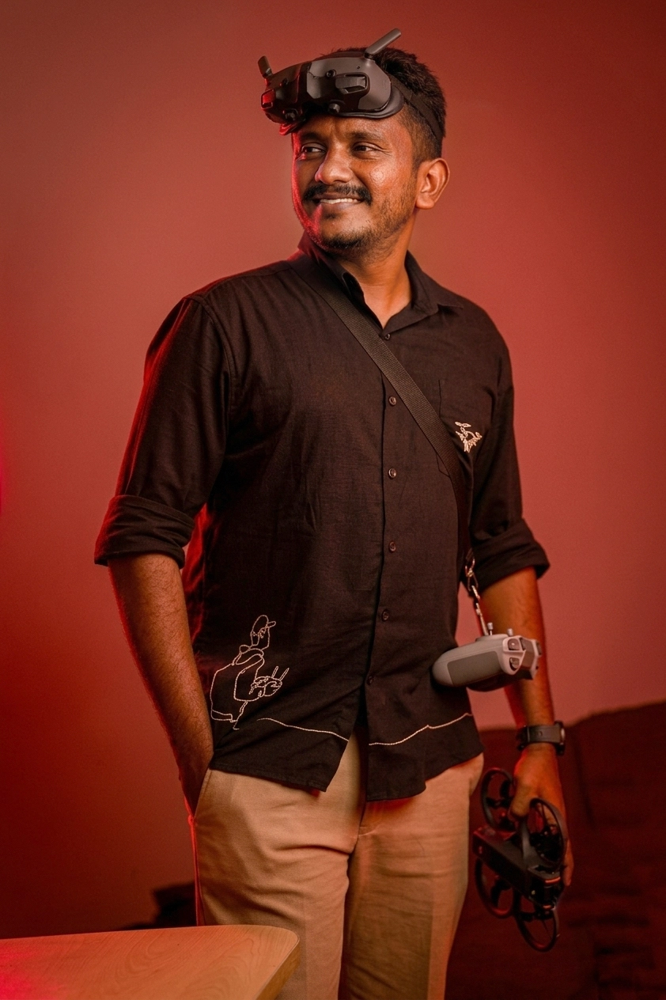
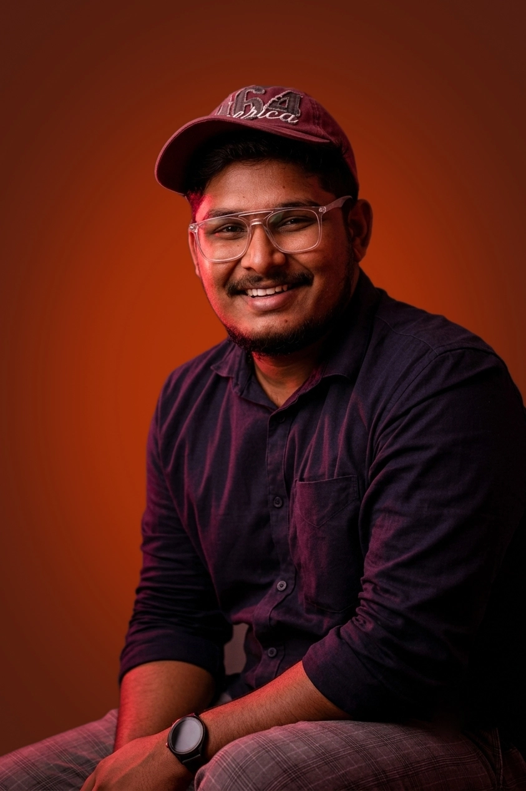
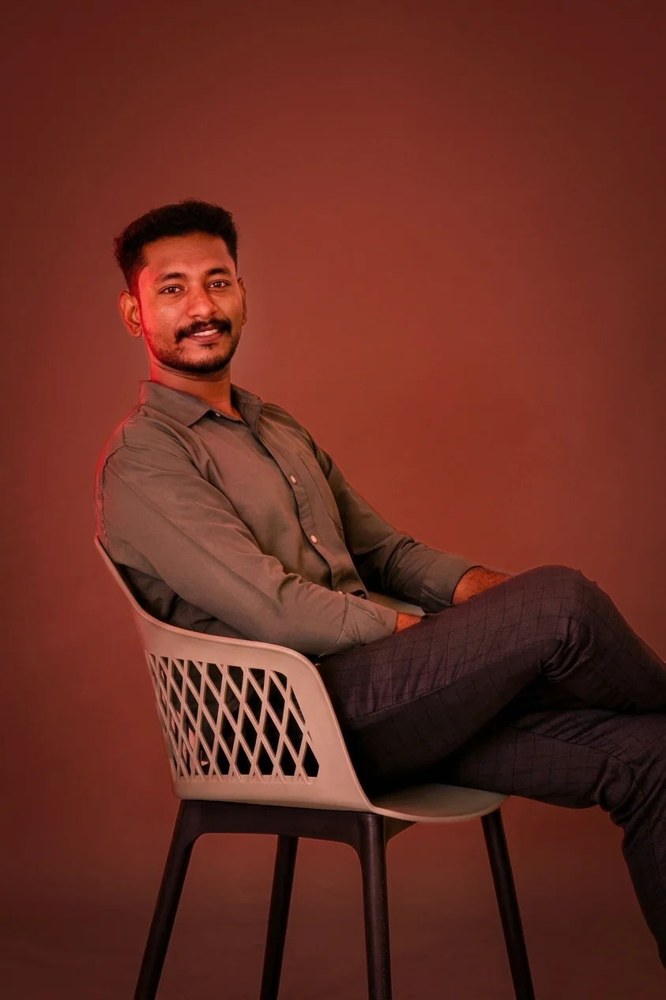
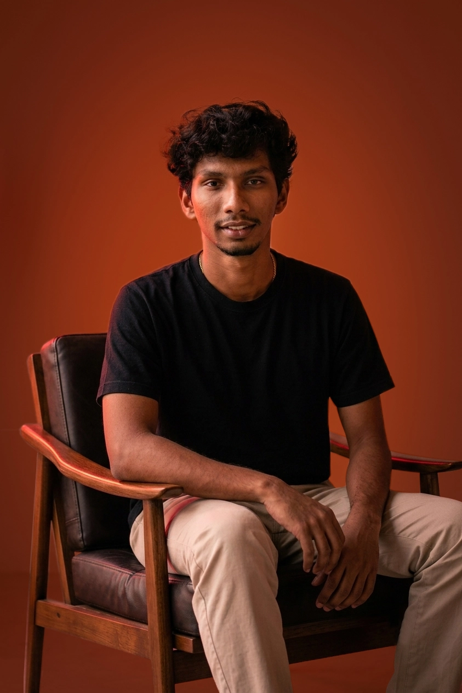

We are a team of photographers and filmmakers who work with light and shadow to create something brilliant. Based at our studio, we come together to discuss and create your photo portfolio in a comfortable and professional atmosphere.

Born in Arunachal Pradesh, Arun moved to Mumbai in 2008
to pursue his passion for visual storytelling. With over
15 years of experience in photography and
cinematography, he specializes in fashion, commercial,
corporate, and architectural photography and films.
Throughout his career, Arun has collaborated with some
of the biggest celebrities such as Shah Rukh Khan, Alia
Bhatt, Amitabh Bachchan, Salman Khan, Virat Kohli, and
Harbhajan Singh. His portfolio also includes projects
for renowned brands such as Unicef, Faber-Castell India,
Sony Pictures, Netgear, Tata Cliq, Havmor Ice Cream, and
Reliance Fashion Factory etc.
Known for his creative vision, technical expertise, and
attention to detail, Arun delivers compelling visuals
that seamlessly blend storytelling with brand identity.

A visionary leader with a strong foundation in Finance and Operations, Aneesh Babu is the driving force behind the strategic growth and operational excellence of Camera & Wayfarer. His expertise in business management, financial planning, and organizational leadership has been instrumental in building a resilient and scalable creative enterprise. Known for his professionalism, strategic mindset, and people-centric approach, Aneesh seamlessly bridges business structure with creative innovation. His commitment to excellence, integrity, and sustainable growth continues to inspire confidence among clients, partners, and the team, positioning Camera & Wayfarer for long-term success.

Anjana Ashok is a Kochi-based entrepreneur and videographer with a passion for visual storytelling and creative content production. A graduate in BBA Airport & Airline Management from Angel Blues, she began her professional journey in the restaurant industry, where she spent two years gaining valuable business and customer service experience while simultaneously building her presence as a content creator. Driven by a deep interest in filmmaking and digital media, Anjana transitioned into videography in 2022, dedicating herself to mastering the craft of capturing compelling stories through visuals. In 2024, she joined CW Productions, working alongside experienced mentors and industry professionals to further refine her skills and expand her creative expertise. Today, Anjana combines her entrepreneurial mindset with her creative vision to produce engaging visual content, bringing authenticity, passion, and attention to detail to every project she undertakes.

Born and brought up in Oman, Priyanka developed an early eye for creativity through her background in Fine Arts. A natural people person, she brings warmth, adaptability, and strong communication into every space she steps into. With dance at her core, expression has always been her strength—eventually leading her into modeling, where she became CW's model and a key creative presence. Blending her creative instincts with performance and visual storytelling, she now works closely with the team, bringing ideas to life while growing together as one.

Shahin Muhammed, a professional Drone Pilot and Aerial Cinematographer with over 5 years of experience in aerial photography and cinematic drone videography. Specializing in creating high-quality aerial visuals for tourism, real estate, commercial projects, events, documentaries, and social media content. Combining technical expertise with a passion for visual storytelling, he captures unique perspectives that bring projects to life. Using professional drone technology and maintaining the highest safety standards, Shahin delivers stunning aerial imagery and cinematic footage that helps brands, businesses, and creators tell their stories from above.

A creative visionary who brings visual storytelling to life through refined art direction and an eye for cinematic detail.

Alan is a Creative Designer and Video Editor with over 5 years of experience crafting compelling visual content and brand stories. Specializing in graphic design, video editing, branding, and digital content creation, he has worked with clients across fashion, real estate, technology, lifestyle, and commercial sectors. Passionate about blending creativity with strategy, Alan creates impactful visuals that engage audiences and strengthen brand identity.

A skilled Video Editor with over three years of freelance experience in post-production and visual storytelling. He specializes in crafting compelling commercials, social media content, corporate films, documentaries, and YouTube productions that captivate audiences and communicate messages effectively. Proficient in industry-leading software including Adobe Premiere Pro, After Effects, and DaVinci Resolve, Lijo combines technical expertise with a strong creative vision to deliver high-quality content tailored to each project's objectives. His keen attention to detail, storytelling approach, and commitment to excellence ensure every production achieves maximum visual impact.